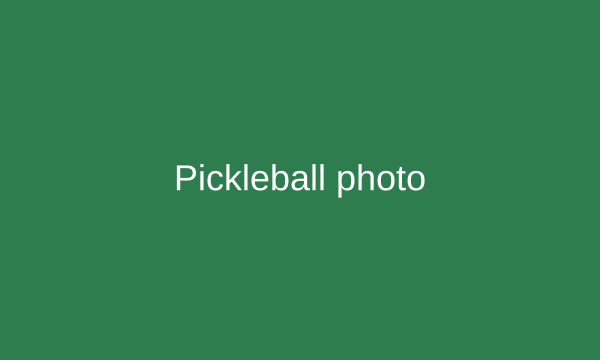
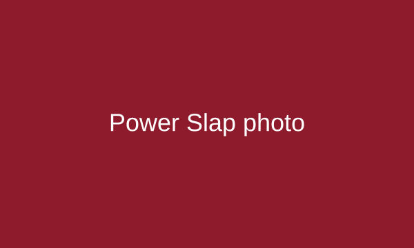

About this project
Niche Sports Programming and Network introduces fans to Pickleball, World Chase Tag and Power Slap. Our goal is to make these sports easier to follow with news, match information and simple beginner guides.
Beginner guides

Pickleball
Players use paddles and a plastic ball to hit shots across a net. They can play singles or doubles.
A little history
Pickleball began as a backyard game on Bainbridge Island, Washington, in 1965. It grew from a family activity into a sport with local clubs and professional tournaments.
Basic rules
- Serve diagonally into the opposite service area.
- Let the serve bounce, then let the return bounce before either side volleys.
- Do not volley from the non-volley zone near the net, called the kitchen.
World Chase Tag
One athlete chases another around an obstacle arena called the Quad. Speed, movement and quick decisions help the evader stay out of reach.
A little history
World Chase Tag was founded in the United Kingdom in 2012. It turned the familiar playground game into an organized competition with teams and international events.
Basic rules
- Each chase has one chaser and one evader.
- The chaser tries to make a valid tag before the chase ends.
- The evader's team earns a point for avoiding a tag for the full chase.

Power Slap
Two competitors take turns as striker and defender in a slap fighting match. Referees enforce the rules, and judges score matches that reach a decision.
A little history
Power Slap was created in 2022 to organize professional slap fighting with defined rules, rankings and weight classes.
Basic rules
- Competitors take turns delivering permitted open-handed slaps.
- Referees check the striking position and enforce rules against fouls.
- Judges consider strike effectiveness and the defender's reaction and recovery.